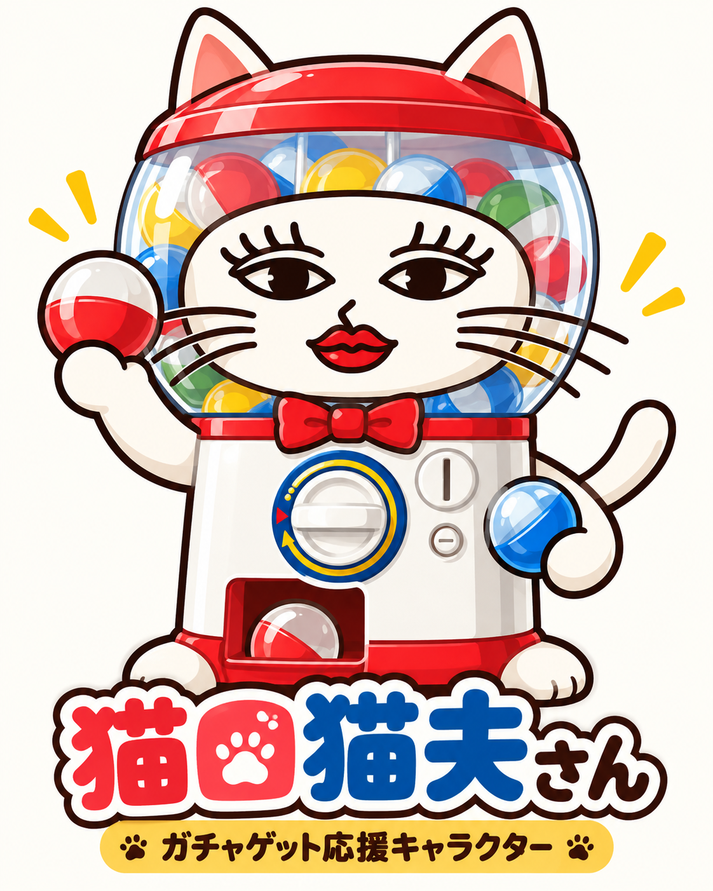

Gacha Challenge
MAKI & MEI · STUDY GAME

2026年度・貝塚市立第四中学校 中学1年生
英語：NEW CROWN English Series 1【三省堂】
国語：国語1【光村図書出版】
出版社の年間指導計画を参考（学校の実際の進度は未確認）
学習事項に沿うオリジナル補充問題。教科書掲載問題ではありません。
英語：NEW CROWN English Series 1【三省堂】
国語：国語1【光村図書出版】
出版社の年間指導計画を参考（学校の実際の進度は未確認）
学習事項に沿うオリジナル補充問題。教科書掲載問題ではありません。
ルールの読み込み中
この端末の記録を読み込み中
4択なし。読みは文字入力、書き取りは指・マウスで自己採点。英単語・英熟語も追加。学期は出版社の月別計画を参考に分類。漢字は学習用語、英語は単語・語形と表現を練習します。未分類問題は出題しません。
おためし版：1日最大3回・全問正解で日次クリア。端末内の記録は削除や端末変更で失われる可能性がある。2人の記録同期・正式ガチャ券は未対応。
指やマウスで漢字を書こう
正解：
自分の書いた漢字と比べてな。正しければ「正解」、違ったら「不正解」を押してな。
RESULT · おためし版
結果発表！
保存処理中…
※この端末だけに記録を保存するおためし版。50問テスト・正式ガチャ券・2人の記録同期は未実装。